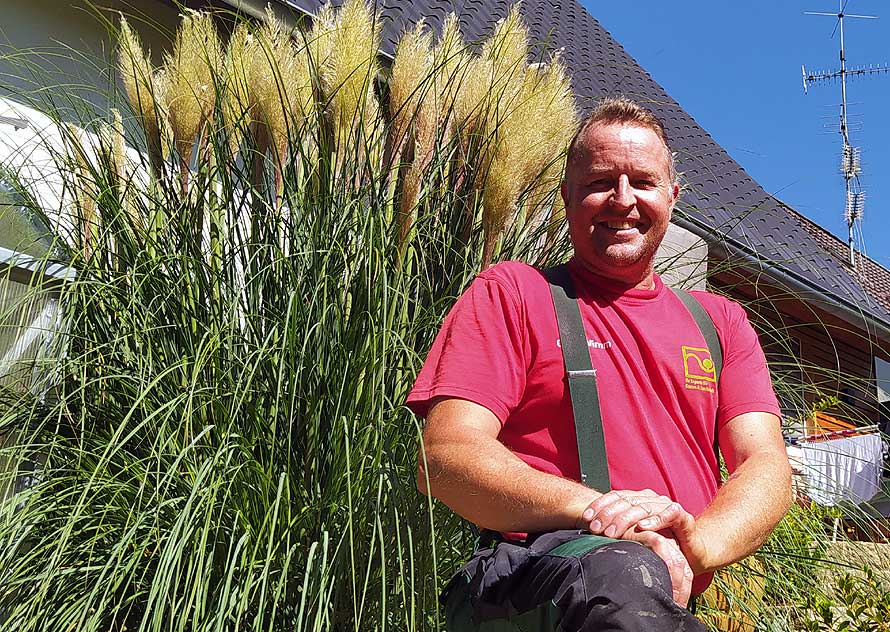
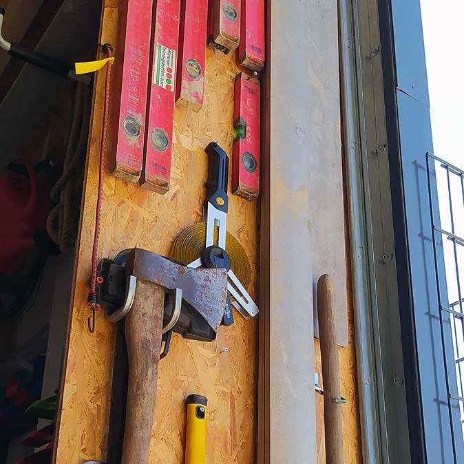
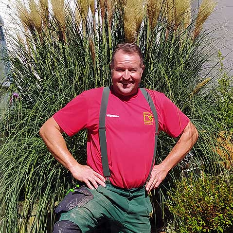

Über uns
Erfahrung, die wir gern weitergeben.
Das gesamte Team freut sich, für Sie tätig zu werden! Von Pflasterarbeiten über Natursteinmauern bis zur Grundstückspflege: Ihr Fachbetrieb aus Bielefeld.

Über 20 Jahre Erfahrung.
Wir freuen uns über Ihr Interesse an unserem Unternehmen. Wir sind Ihr Fachbetrieb für alle Tätigkeiten rund um Ihren Garten – von Pflasterarbeiten über Natursteinmauern bis zur Grundstückspflege.
Die Firma Christof Wimmer ist ein mittelständischer Meisterbetrieb mit über 20 Jahren Erfahrung im Garten- und Landschaftsbau – diese Erfahrung geben wir gern an unsere Kunden weiter. Seit 2017 sind wir anerkannter Fachbetrieb.
Geschichte
Vom Gärtner zum eigenen Firmengelände.
- 1996
Ausbildung zum Gärtner, Fachrichtung Garten- und Landschaftsbau
- 2006
Meisterprüfung im Garten- und Landschaftsbau
- 2012
Firmengründung „Feine Gärten“
- 2017
Anerkannter Fachbetrieb
- 2021
Hallenneubau und Umzug auf eigenes Firmengelände

- Garten- und Landschaftsbauer in Vollzeit (m/w/d)
- Garten- und Landschaftsbauer in Teilzeit (m/w/d)
Team
Wer für Sie arbeitet.

Christof Wimmer
Gartenbaumeister, Inhaber
Kontakt
Was kann ich für Sie tun?
Rufen Sie an, schreiben Sie per WhatsApp oder E-Mail. Nach einer ausführlichen Beratung, am liebsten gleich vor Ort, erhalten Sie ein unverbindliches Angebot.
- 0178 458 11 27montags bis freitags, 07.00 – 16.00 Uhr
- WhatsApp schreibenan 0178 458 11 27
- info@feine-gaerten.comWir antworten so schnell wie möglich.